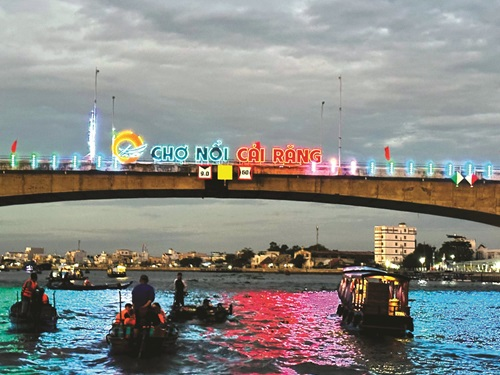
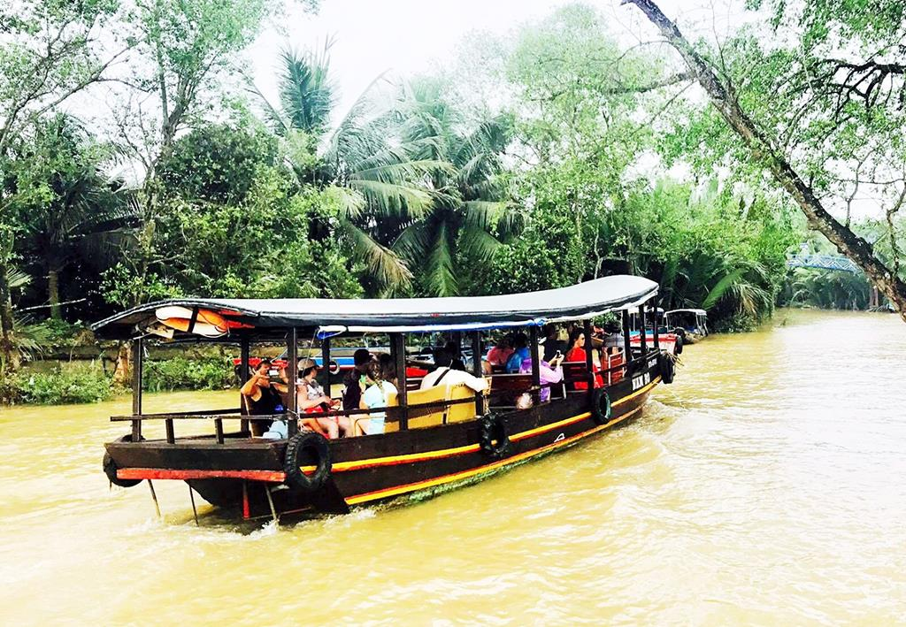
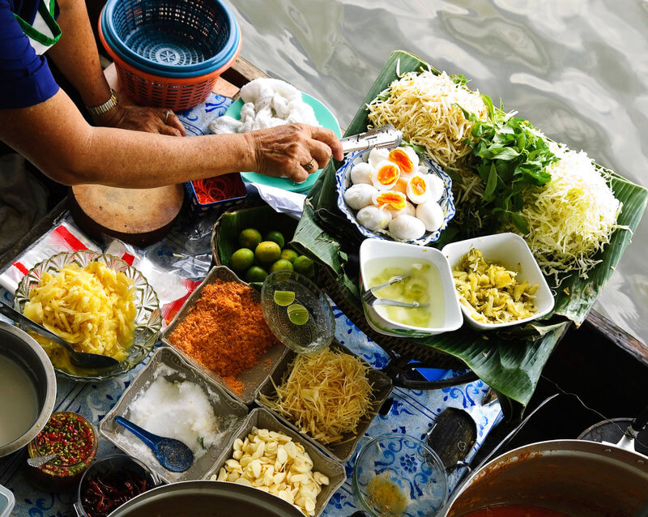
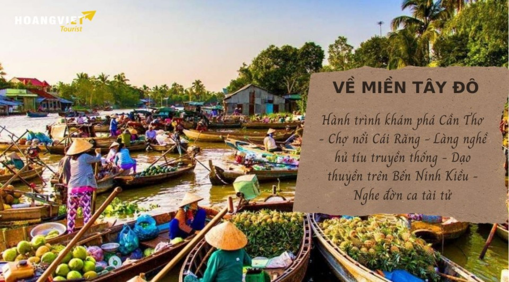
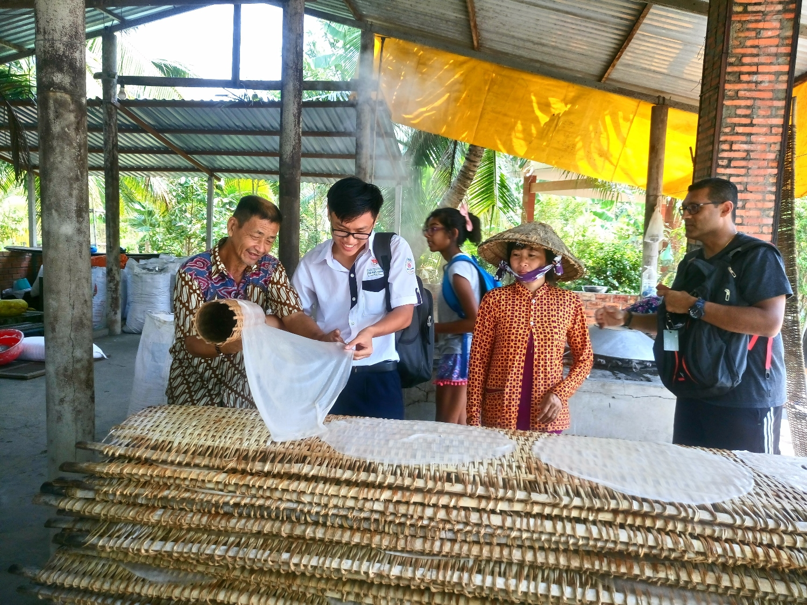
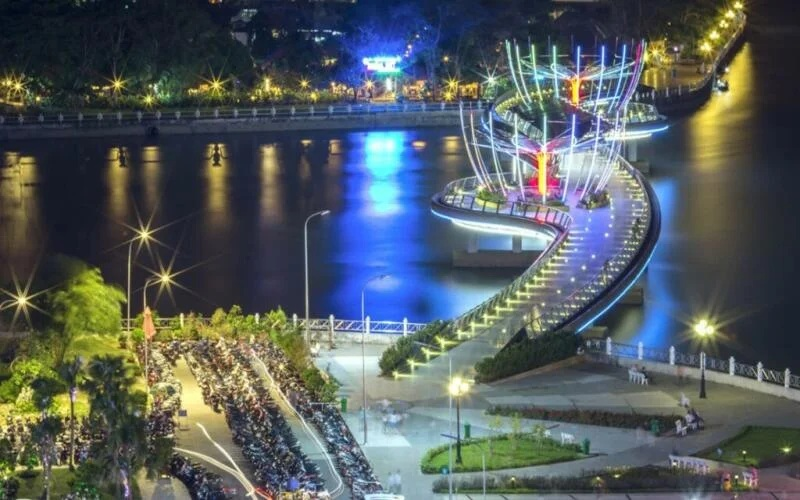
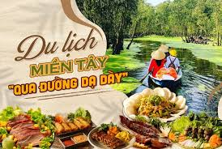
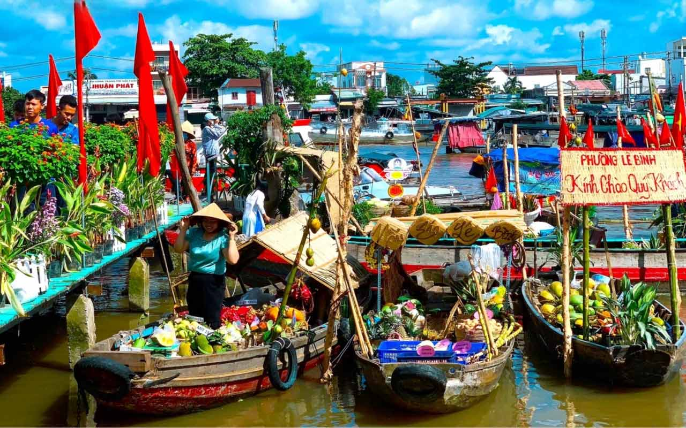

Giới Thiệu Tour
Chợ nổi Cái Răng là một trong những điểm đến nổi tiếng nhất của Cần Thơ, mang đậm nét văn hóa giao thương trên sông của miền Tây Nam Bộ.
Tour Chợ Nổi Cái Răng đưa du khách trải nghiệm đi thuyền buổi sáng, ngắm cảnh mua bán trên sông, thưởng thức trái cây, bún riêu, hủ tiếu, tham quan vườn trái cây và cảm nhận đời sống bình dị của người dân miền Tây.
Điểm Nổi Bật

Chợ Nổi Cái Răng
Khám phá cảnh ghe thuyền mua bán tấp nập trên sông vào buổi sáng sớm.

Đi Thuyền Trên Sông
Len lỏi giữa dòng sông, cảm nhận không khí mát lành của miền Tây.

Ăn Sáng Trên Ghe
Thưởng thức hủ tiếu, bún riêu, cà phê và trái cây ngay trên sông.

Vườn Trái Cây
Tham quan vườn cây xanh mát và thưởng thức trái cây theo mùa.

Làng Nghề Truyền Thống
Tìm hiểu cách làm hủ tiếu, bánh dân gian và sản phẩm thủ công địa phương.

Bến Ninh Kiều
Dạo chơi bên bờ sông Hậu, ngắm cảnh thành phố Cần Thơ về đêm.

Ẩm Thực Miền Tây
Thưởng thức cá lóc nướng, lẩu mắm, bánh xèo và các món dân dã.

Góc Check-in Sông Nước
Nhiều góc ảnh đẹp với ghe thuyền, sông nước, cầu gỗ và vườn cây.
Lịch Trình Chi Tiết
Ngày 1 — Khởi Hành Đến Cần Thơ
07:00 — Khởi hành từ TP.HCM hoặc điểm hẹn đã đăng ký.
11:30 — Đến Cần Thơ, dùng bữa trưa với đặc sản miền Tây.
14:00 — Tham quan vườn trái cây và làng nghề truyền thống.
16:30 — Nhận phòng khách sạn, nghỉ ngơi.
18:30 — Ăn tối, dạo Bến Ninh Kiều và khám phá Cần Thơ về đêm.
Ngày 2 — Khám Phá Chợ Nổi Cái Răng
05:30 — Lên thuyền đi chợ nổi Cái Răng.
06:00 — Ngắm cảnh mua bán trên sông, chụp ảnh ghe thuyền tấp nập.
07:00 — Ăn sáng trên ghe với hủ tiếu, bún riêu hoặc cà phê miền Tây.
08:30 — Tham quan cơ sở làm hủ tiếu truyền thống.
10:30 — Trả phòng, mua đặc sản Cần Thơ làm quà.
12:00 — Dùng bữa trưa, khởi hành về lại điểm đón ban đầu.
17:00 — Kết thúc tour, hẹn gặp lại quý khách.
Bảng Giá Tour
| Đối Tượng | Giá / Người | Ghi Chú |
|---|---|---|
| Người lớn | 2.400.000 ₫ | Bao gồm xe đưa đón, khách sạn, thuyền tham quan và bữa ăn. |
| Trẻ em 5–11 tuổi | 1.700.000 ₫ | Có ghế ngồi riêng, ngủ chung phòng với người lớn. |
| Trẻ em dưới 5 tuổi | Miễn phí | Ngồi cùng người lớn, chưa bao gồm chi phí phát sinh riêng. |
| Phụ thu phòng đơn | +350.000 ₫ | Áp dụng khi khách muốn ở một mình một phòng. |
Giá đã gồm: xe du lịch, khách sạn, thuyền tham quan chợ nổi, bữa ăn theo chương trình, hướng dẫn viên và bảo hiểm du lịch.
Đánh Giá Khách Hàng
4.8 / 5 ★★★★★
121 đánh giá từ khách đã tham gia tour.
Trần Thu Ngân
Lịch trình nhẹ nhàng, có nhiều trải nghiệm thật. Mình thích nhất đoạn đi thuyền và ăn sáng trên sông.
Lê Quốc Huy
Hướng dẫn viên vui vẻ, khách sạn sạch, tour phù hợp cho gia đình muốn trải nghiệm miền Tây.
Nguyễn Minh Tâm
Đi chợ nổi buổi sáng rất thú vị, không khí miền Tây gần gũi và đồ ăn trên ghe rất ngon.